Scratching the Surface
Classical CV vs Vision-Language Models for steel defect detection
2026-05-18
A. Hook
The 30-second pitch
How can we prepare for the unknown?
Is computer vision a solved problem?
How can we save time with new tech?
B. Context
What is rolled-metal?

What are rolled-metal defects?
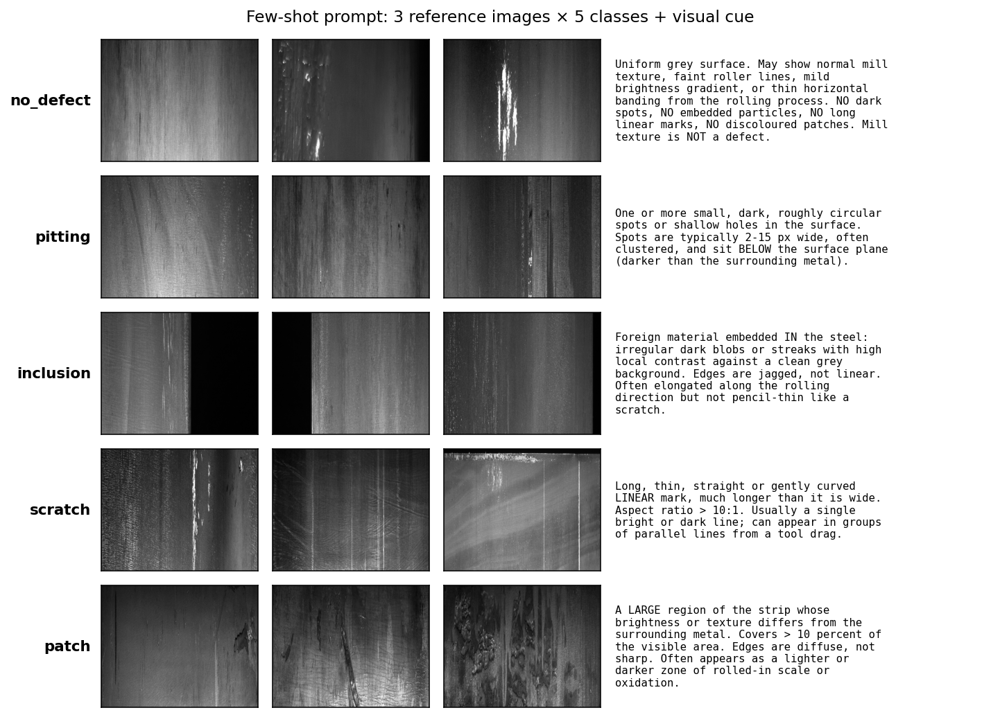
What are rolled-metal defects? — your turn
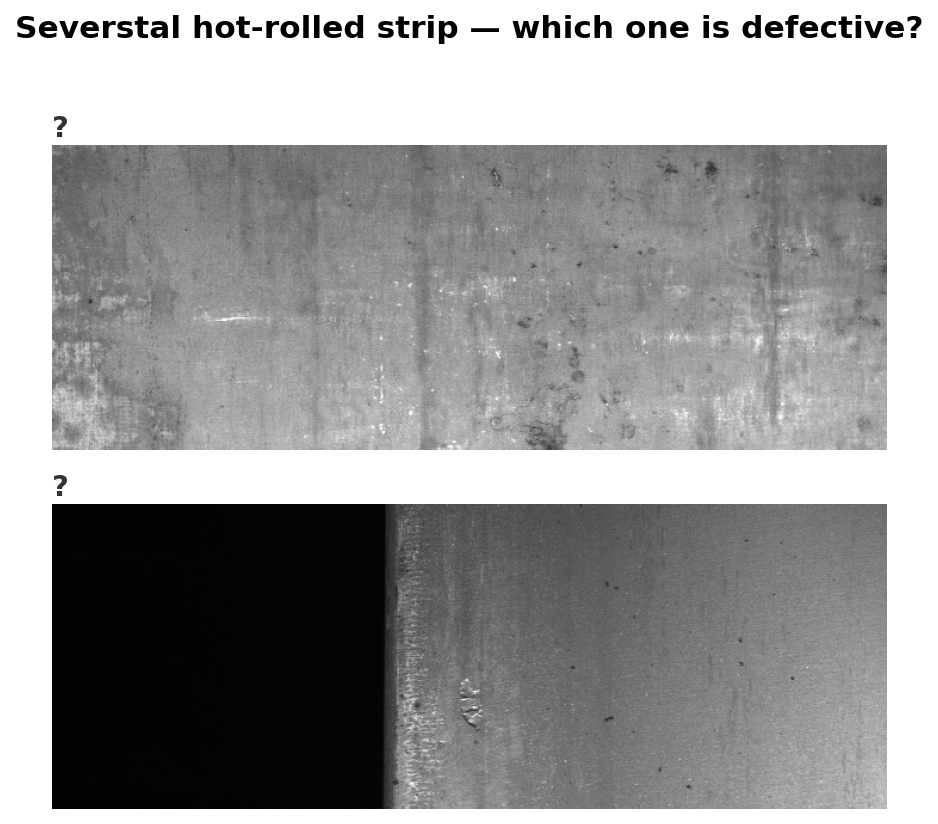
Two Severstal hot-rolled steel-strip close-ups. One is labelled defective, one is not. Which is which?
…and here is the pixel-level ground truth
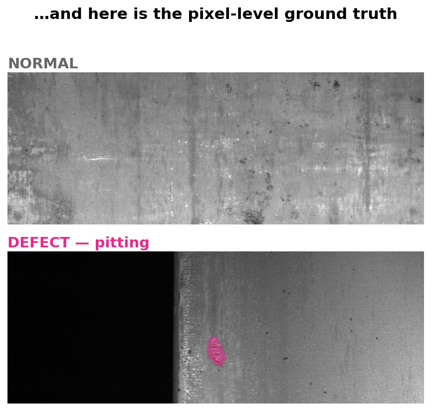
The bottom strip is the defect: a single pit (pink mask). The top strip is what Severstal annotators flagged as normal — texture and rolling marks, no actionable defect.
Try another pair — both have defects
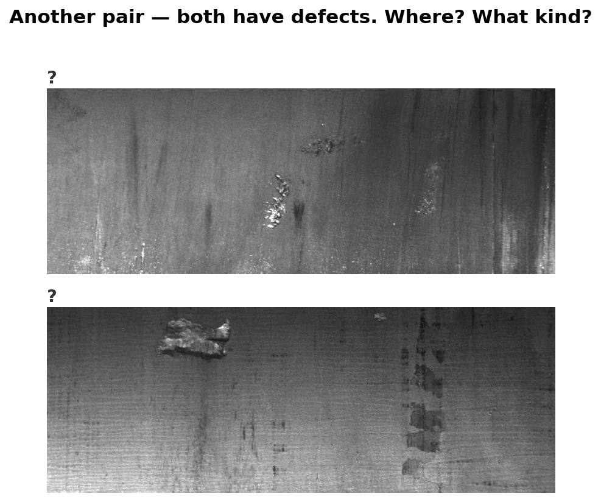
Two more close-ups. Both strips are defective. Can you spot the marks, and would you call them the same kind of defect?
…annotated by a metallurgist, pixel by pixel
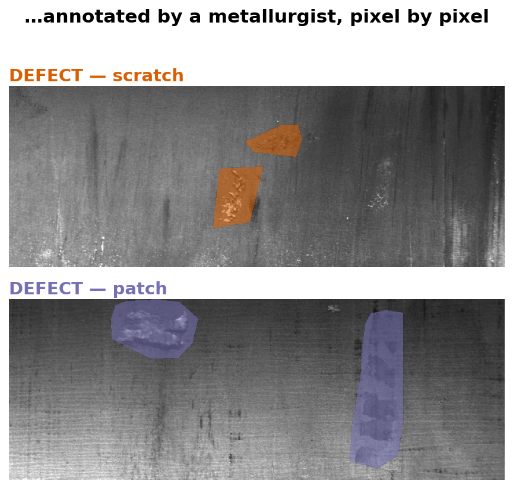
The top strip carries small “scratch” blobs (orange); the bottom strip has large “patch” regions (purple). Same dataset, same camera, four totally different defect taxonomies — and the annotator decides which one to call.
C. What do we know from AQ Group?
What is their setup??

We make some assumptions about the project spec
We will treat the problem as if they have
no labelled data,
but want us to as quickly as possible provide them with a system that can identify defects on the production line.
Then in this demo, I choose
two datasets that have some similarities to what we might expect from AQ Group as training data
and use another dataset as a holdout set to test how well our models generalise to new domains.
So how do we go about this??
D. Is computer vision a solved problem?
Yes — classical CV is a (mostly) solved problem!
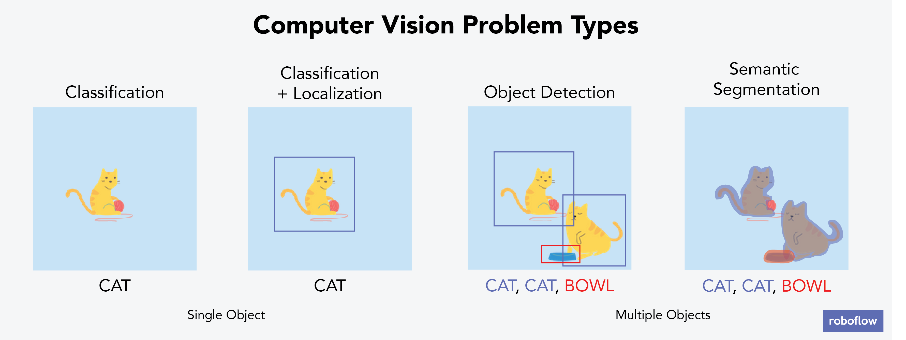
The standard CV taxonomy: classification, detection, segmentation.
The people who solved it

…and the network that started it
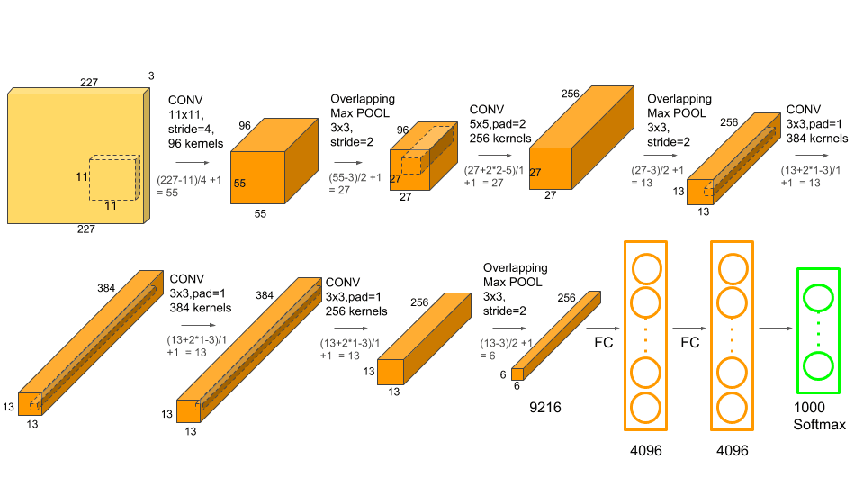
AlexNet (2012) — the architecture that ended hand-crafted feature engineering and started the deep-learning era of computer vision.
But the issue is when we change the domain…
The annotation bottleneck
Classical CV runs on labels.
Every time the camera moves, the lighting changes, or a new defect class shows up, the whole pipeline goes back to the annotator queue.
For AQ Group we don’t yet know:
- which mill
- which camera, which lighting rig
- which defect taxonomy matters in production
So the safe bet is a system that can start without labels.
Datasets at a glance
| Dataset | Role | Train | Test | Image size | Native taxonomy |
|---|---|---|---|---|---|
| Severstal | Train | 10,053 | 1,259 | 1600 × 256 | 4 classes (pit, scratch, patch, ridge) |
| NEU-DET | Train | 1,700 | 100 | 200 × 200 | 6 classes (crazing, inclusion, …) |
| KolektorSDD2 | Holdout | 2,332 | 1,004 | 230 × 630–1240 | 1 binary mask |
All labels collapsed to a single binary defect / no-defect target. The two TRAIN POOL datasets are what ResNet50 and YOLO11s see during training. KolektorSDD2 is the new mill — different camera, different lighting, different defect vocabulary — that the classical models have to generalise to.
The domain-gap problem, visualised
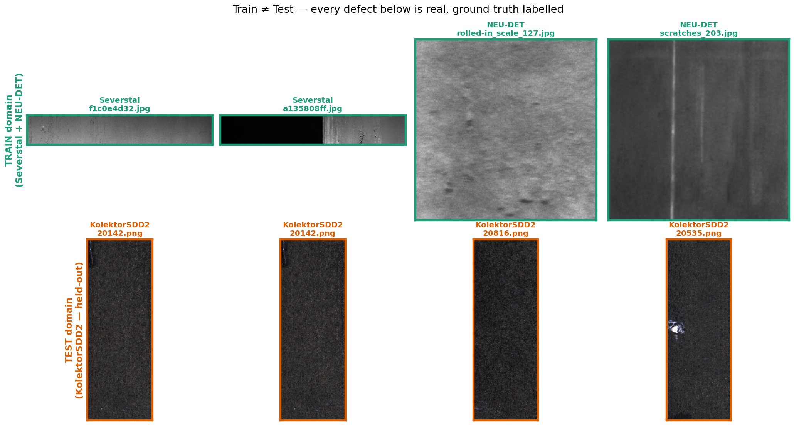
Same task — “is this strip defective?” — wildly different pixels.
Two classical workhorses
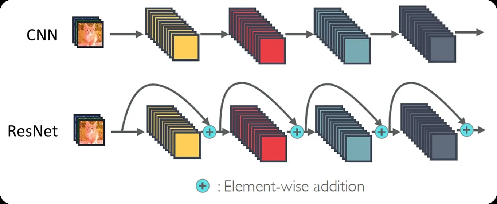
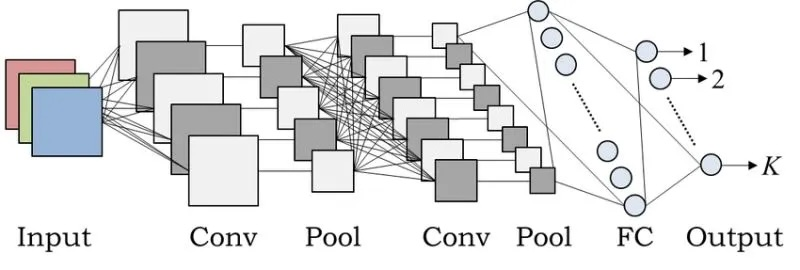
What the baseline ResNet actually predicts
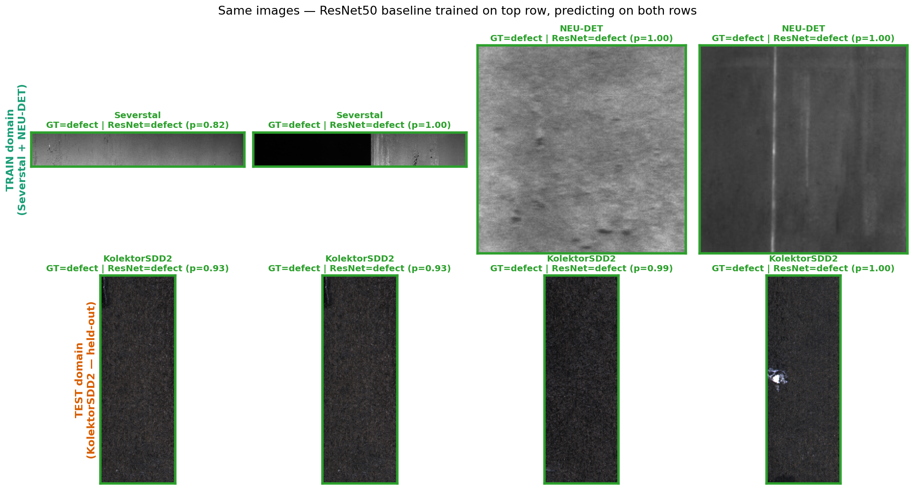
Random test images with ResNet50 prediction overlay. Green border = correct, red = wrong. The model is confidently wrong on the new domains.
Grad-CAM: peeking inside the black box
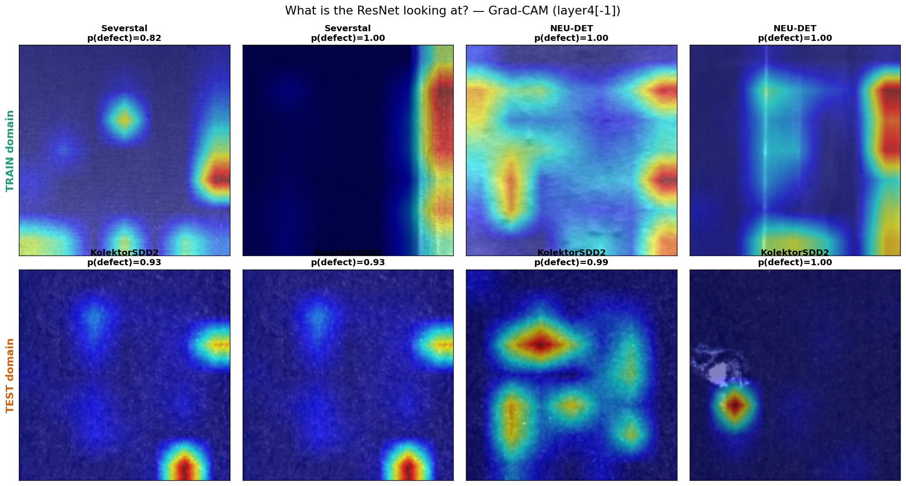
layer4 activations. Top: Severstal+NEU samples — the model lights up on defect-correlated texture. Bottom: KolektorSDD2 — attention scatters onto seams, edges, and lighting artefacts unrelated to actual defects.Why does the F1 collapse?
It’s not that the network “forgot how to see.” It’s that the features it learned to chase — strip-aligned texture statistics from Severstal — simply aren’t where the defects live in Kolektor.
The model is doing exactly what it was trained to do. The training distribution lied about the world.
More labels won’t save us
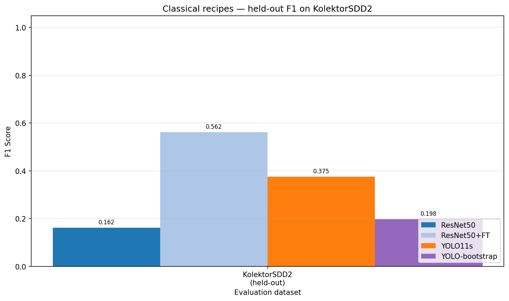
No classical recipe gets us there.
Fine-tuning on Kolektor helps — F1 climbs from 0.16 to 0.56 — but still leaves us far short of production-ready.
~11 700 labels in, and the ceiling is a passable model on one mill.
A YOLO box says something a heatmap can’t
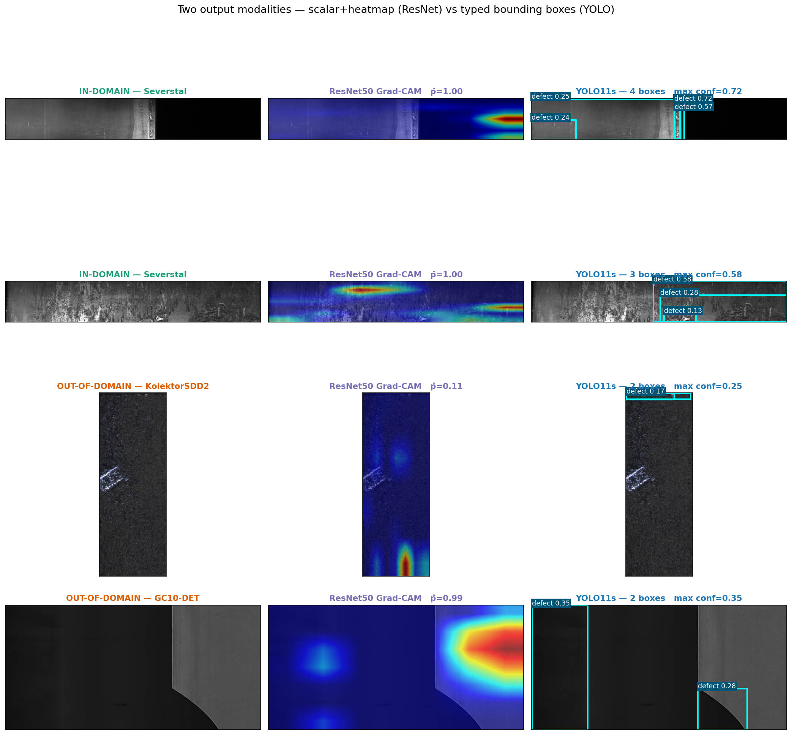
Same three images, two outputs. Middle: ResNet50 Grad-CAM — one scalar p̂(defect) plus a soft “where roughly”. Right: YOLO11s — one or more typed bounding boxes, each with its own confidence. Top two rows are in-domain Severstal; bottom row is out-of-distribution KolektorSDD2.
Why are VLMs better at CV tasks now?
GPT-3.5
No FusionLaunch of ChatGPT. Core engine handles text tokens exclusively.
GPT-4 (Base)
No FusionMassive logical upgrade, but architecture remains text-only.
GPT-4V / Voice
Late FusionStitched pipeline. External vision encoders and audio transcribers translation layers.
GPT-4o
Early FusionUnified architecture. Processes text, native sight, and live audio in one neural space.
GPT-4o mini
Early FusionStreamlined omni variant maintaining native multimodal processing.
GPT-5 Family
Early FusionScales early-fusion to native video generation and seamless token blending.
E. How do Vision-Language Models see images?
Late Fusion
Train a Large Language Model on text, then add vision as a separate input channel with a translation layer.
Early Fusion
Train a Large Language Model on text and images together, with a shared internal representation.
Early Fusion shared embedding space
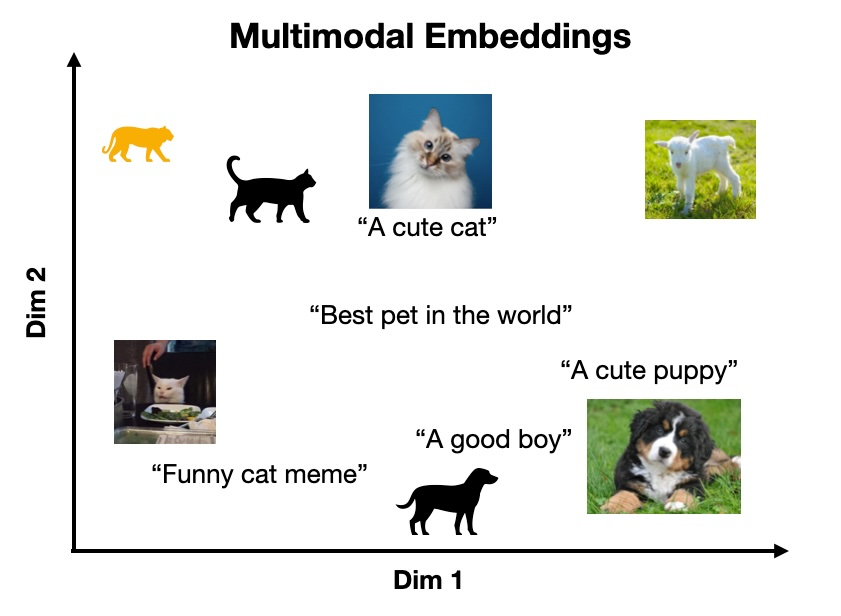
F. Flagship VLM Bake-Off
Same images, frontier models, zero training
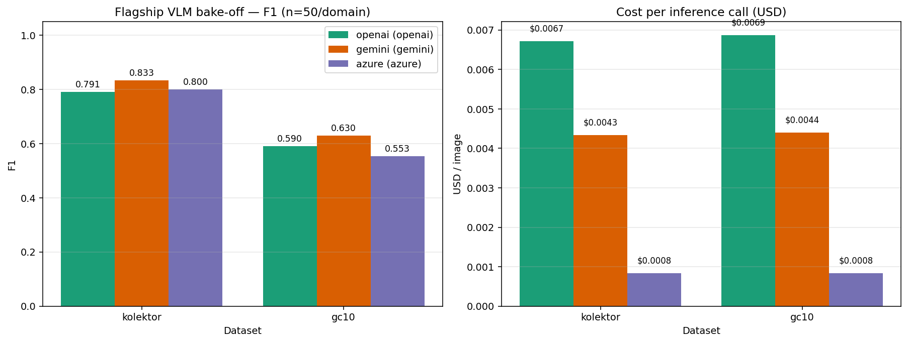
Setup
- 50 images (balanced) from held-out KolektorSDD2
- Identical CoT-with-JSON-schema prompt
- 3 providers via
src/vlm_clients.py - Costs logged to
results/cost_ledger.csv, capped at$50
Reading the chart
- All three frontier models beat the supervised ResNet50 on Kolektor.
- Gemini 2.5 Pro tops the chart at F1 0.83.
- Azure mid-tier (gpt-4.1-mini) is the price–performance knee at F1 0.80 for ~10× less per call.
Best VLM vs classical — KolektorSDD2 F1
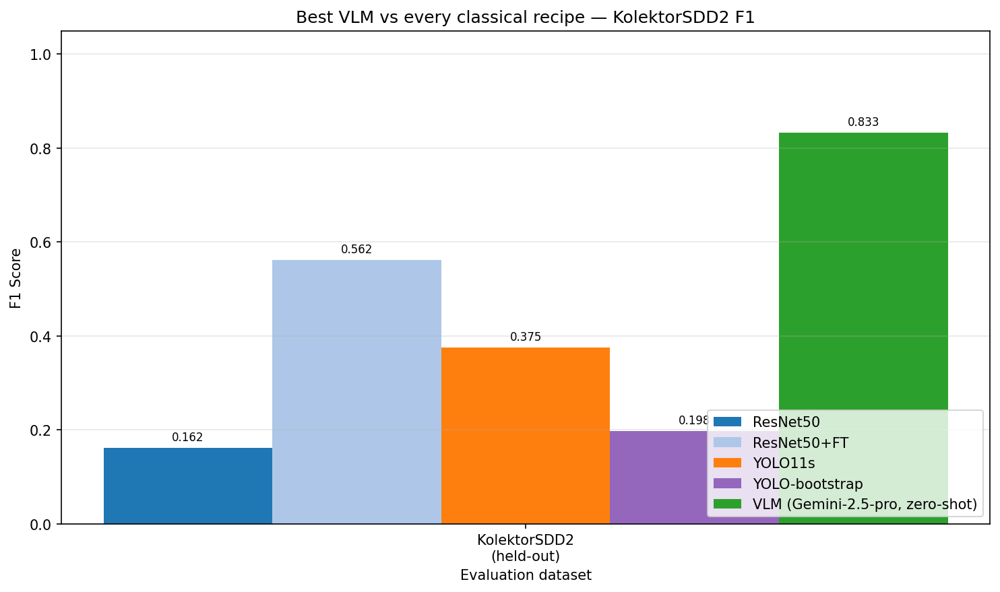
The headline.
- Best classical recipe (ResNet50 + Kolektor FT): 0.56
- Best zero-shot VLM (Gemini 2.5 Pro): 0.83
No labels on the new domain, no fine-tuning, no schema changes — just an API call with a prompt.
G. Prompt-tuning as gradient descent on words
A structured-output teacher critiques a structured-output student
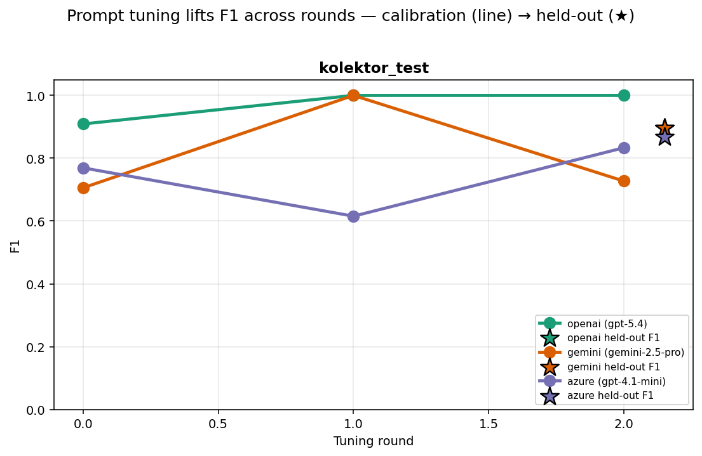
The loop (scripts/prompt_tune_vlm.py)
- Score base prompt on a 12-image calibration set
- Collect every disagreement with its parsed reasoning + attributes
- Feed disagreements to gpt-5.5 as a “domain prompt engineer”
- Tuner emits JSON:
summary,common_mistakes[],prompt_addendum - Append the addendum, re-score, repeat
The tuner output is schema-enforced — strict JSON, no free-form prose. The addendum becomes a # DOMAIN-SPECIFIC GUIDANCE block prepended to the student’s user prompt.
The tuner’s schema
TUNER_SCHEMA = {
"type": "object",
"properties": {
"summary": {"type": "string"},
"common_mistakes": {
"type": "array",
"minItems": 1,
"items": {
"type": "object",
"properties": {
"pattern": {"type": "string"},
"fix": {"type": "string"},
},
"required": ["pattern", "fix"],
},
},
"prompt_addendum": {
"type": "string",
"description": (
"Markdown to append under '# DOMAIN-SPECIFIC GUIDANCE'. "
"Explains the domain, what counts as a defect, and "
"the visual heuristics that disambiguate the hard cases."
),
},
},
"required": ["summary", "common_mistakes", "prompt_addendum"],
}H. Two languages of explanation
Grad-CAM points. The VLM tells you why.
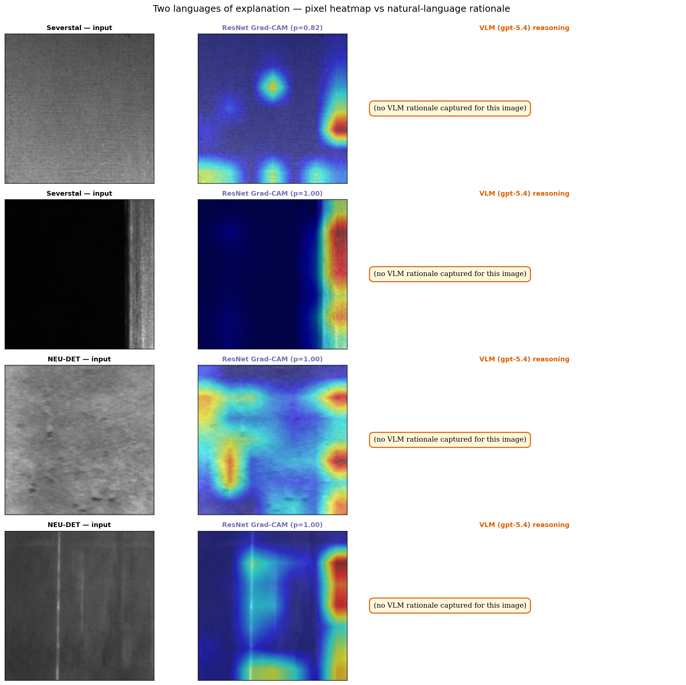
Four images — one normal Severstal frame at the top, then three defective close-ups from KolektorSDD2 and Severstal. Middle: ResNet50 Grad-CAM heatmap (red = pixels that pushed p(defect) up). Right: live GPT-5.4 reasoning for the same image (no fine-tuning, structured-output prompt).
I. The economics: when does a VLM pay for itself?
How fast is each model on one image?
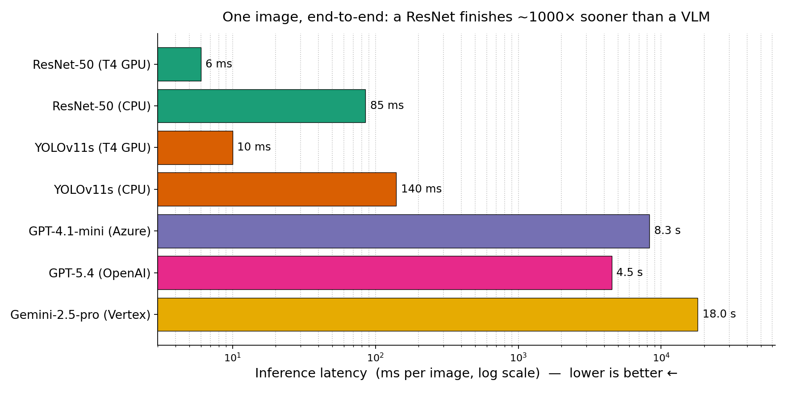
results/vlm/flagship_summary_*.json.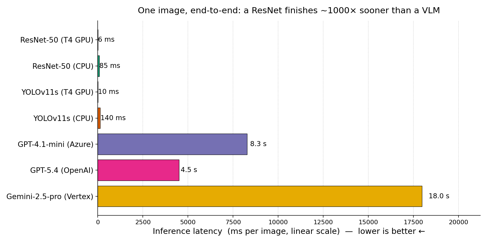
…and what does each call actually cost?
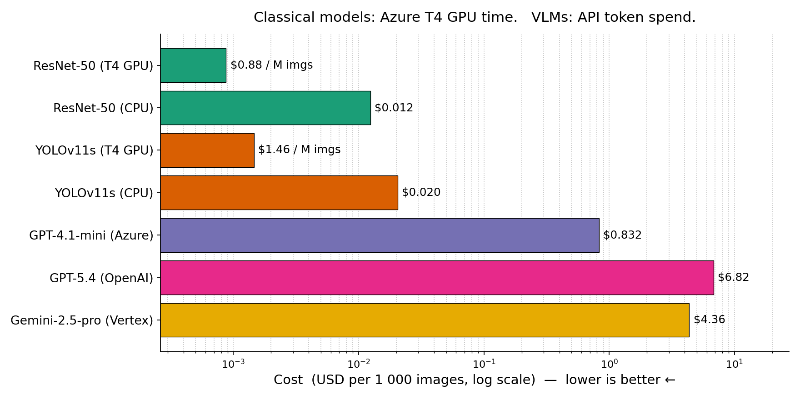
results/cost_ledger.csv.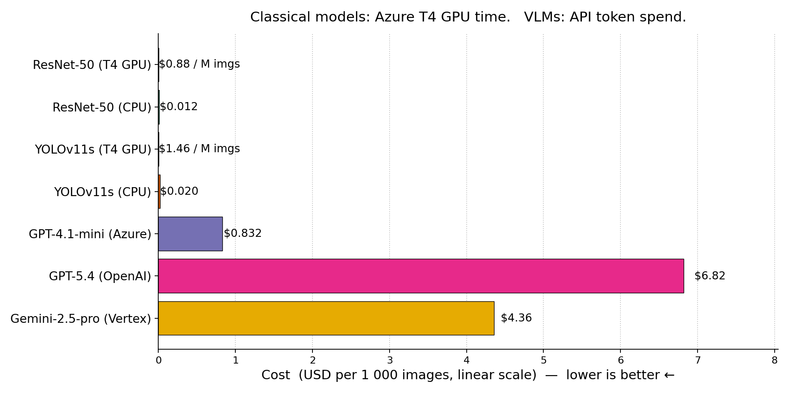
One-off labelling + classical inference vs per-image VLM
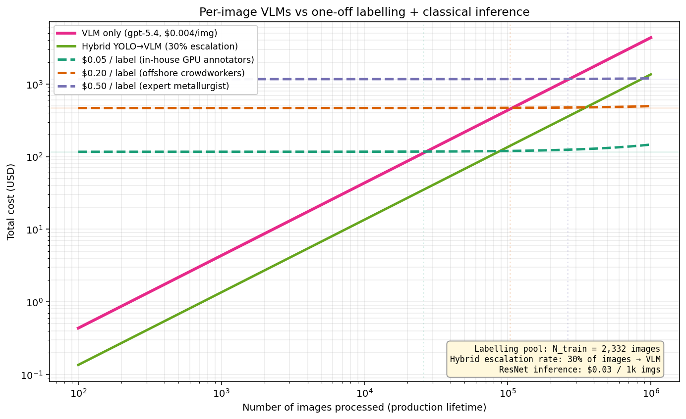
N_train = 2,332 images and serving a near-free ResNet/YOLO.Three label-cost worlds
- $0.05 / label — in-house GPU-side annotators
- $0.20 / label — offshore crowd workers
- $0.50 / label — expert metallurgist sign-off
Break-even images processed (VLM-only vs label-once-then-classical):
- $0.05/label → ~26k images
- $0.20/label → ~104k images
- $0.50/label → ~261k images
A line running 24/7 hits 26k images in hours. The hybrid (YOLO → escalate 30% to VLM) buys back another 3×.
Does the student ever catch the teacher?
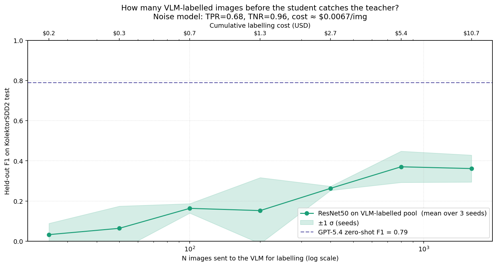
Setup (scripts/labelling_curve.py)
- Pool: Kolektor train (~2 300 images, ~10 % defective)
- Labels: VLM pseudo-labels with measured noise (TPR=0.68, TNR=0.96)
- 3 seeds per N — no class balancing
- 6 epochs, AdamW, ResNet50
Reading the chart
- At N ≤ 1 600, the student has not caught the teacher (F1 peaks ~0.37 vs 0.79).
- The gap signals that more labels and/or a cleaner label budget would be needed.
- The dollar axis makes the trade-off concrete: $10.74 of labelling still falls short.
J. The takeaway
Use VLMs to teach classical CV. Don’t put them in the hot loop.
What we showed
- Classical CV fails under realistic domain shift — and Grad-CAM tells you why.
- Frontier VLMs generalise zero-shot to unseen mills and defect taxonomies.
- A prompt-tuning loop, with a structured-output teacher, moves F1 measurably on a 12-image calibration budget.
- VLMs and Grad-CAM give complementary explanations — where and why.
- At line-rate volumes, the break-even versus paid labelling lands in hours, not months.
The recipe for AQ Group
- Day 1 — drop a VLM in shadow mode behind the existing camera. Zero labels needed.
- Week 1 — harvest the VLM’s pseudo-labels. Tune the prompt against your disagreements.
- Week 2 — train a small ResNet / YOLO on the pseudo-labels. Put that in the hot loop.
- Ongoing — escalate the bottom-30%-confidence frames back to the VLM. Re-train weekly.
The VLM is the teacher and the safety net, not the production classifier.